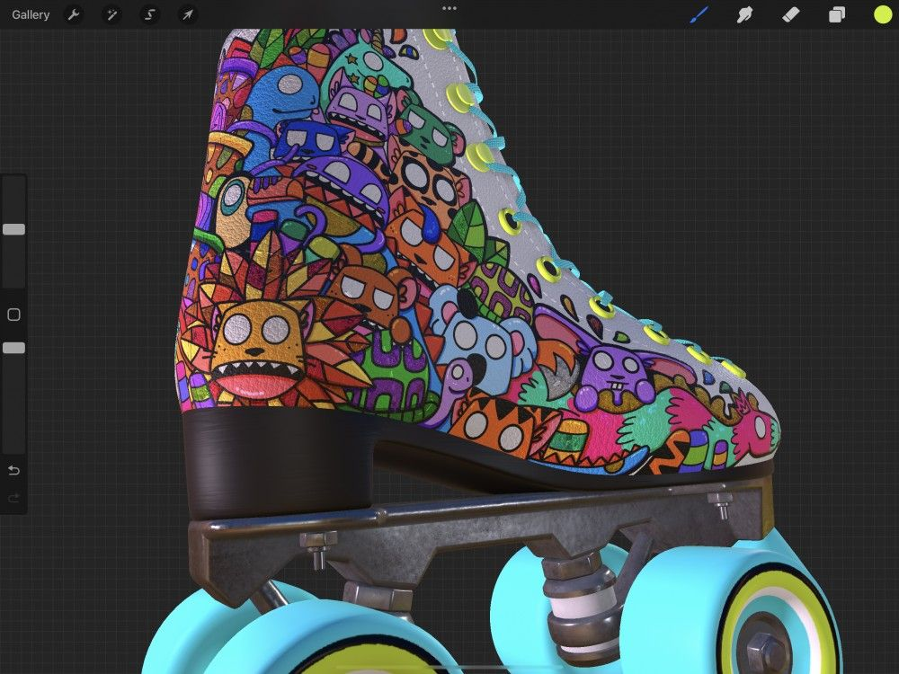
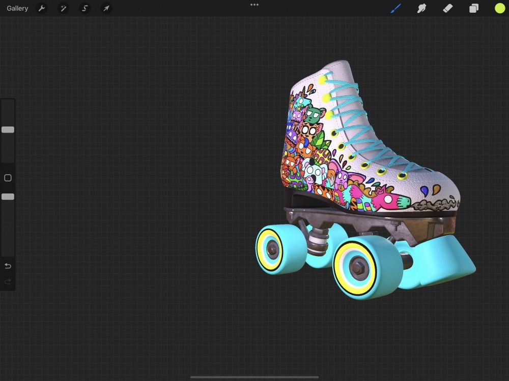
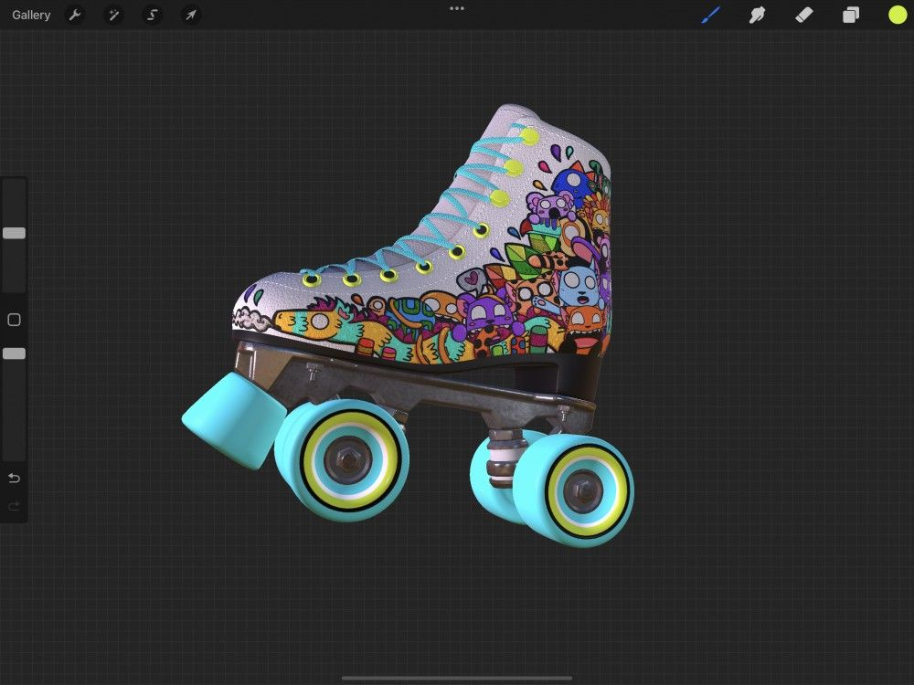
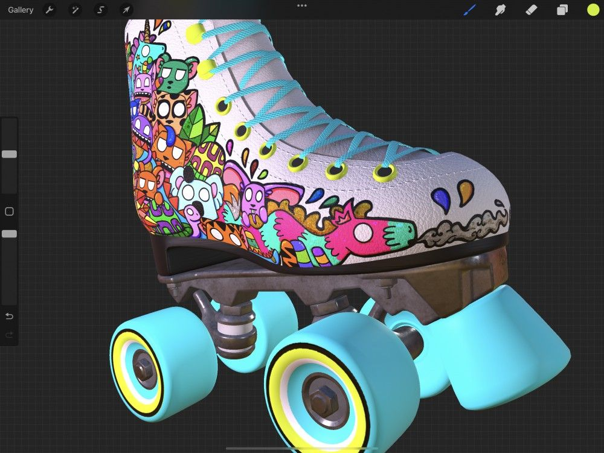
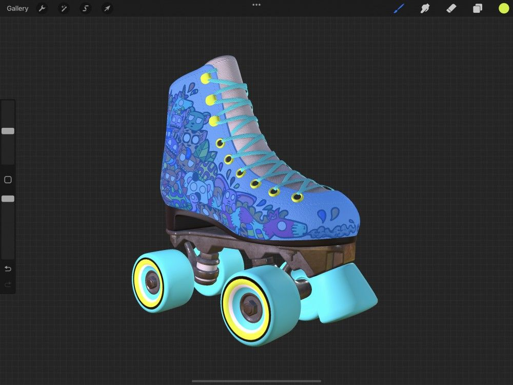
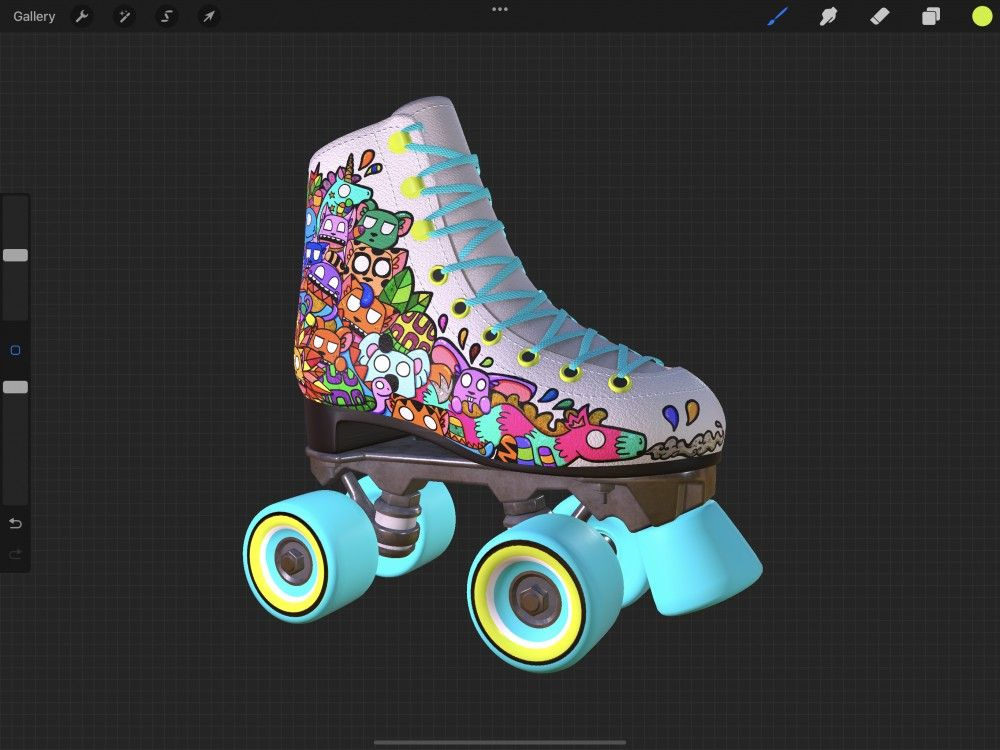

📖 Nội dung bên dưới là bản gốc tiếng Anh (chưa dịch). Ảnh đã cache offline.
Interface & Gestures
3D Painting in Procreate looks similar to 2D, but there are some important differences to how the interface and gestures work. Familiarize yourself with these before jumping in and painting on your 3D model.
Activate
3D Painting will only activate if you have imported at least one 3D model into Procreate. Selecting a 3D model from your Gallery will automatically open the 3D Painting interface.
To find out more about importing 3D models and activating 3D Painting check out Import in the 3D Painting section of this Handbook.
Interface
Basic Interface
When you first open a model in 3D Painting the interface will look very similar to 2D Procreate. Instead of a flat 2D canvas, you will see your 3D model on a neutral background.
Just like 2D painting in Procreate, layers are an important part of 3D Painting. Layers work differently in 3D painting, representing the various pieces of your 3D model’s texture.
The 3D model is your canvas when 3D Painting in Procreate.
You can paint straight onto a model using Paint, Smudge and Erase just like you would in 2D. All Adjustments except Blur, Liquify and Clone also work when 3D Painting.
You can move, rotate and zoom your 3D model to access all sides and areas of your object and tap to select various parts of a 3D model you want to paint on.
Because the 3D model is your canvas in 3D Painting, you cannot paint on the background that the models sit on. Think of this background as an empty 3D space that your object floats in.
Like a pasteboard that a 2D digital canvas sits on, the background is there purely as a place for your model to sit while you paint on it.
While you cannot paint on the background, you can change the environment your model is placed in. Visit the Lighting Studio page in this handbook for more information.
The Layers Panel in 3D shows the texture sets that wrap around your models.
You may see a single texture set if you have a simple 3D object. Or, you may see multiple texture sets if your 3D object is more complex.
Just like 2D painting, you can add extra layers to paint on in a non-destructive way without affecting the original Base Layer your 3D model came with.
Layer options, including masking and blend modes work in 3D Painting the same way they do when painting in 2D.
For an in-depth explanation of how layers work in 3D Painting check out Layers in the 3D Painting section of this Handbook.
Actions Interface
When 3D Painting some of the options in the Actions menu change. Canvas, Share and 3D all have options unique to 3D Painting.
Heads Up
One important thing to note when entering Actions while 3D Painting is the Video Actions icon is replaced by a 3D Actions icon.
Canvas
Canvas in 3D Painting is where you’ll find the 3D Reference companion, see canvas information and even sign your artwork.
Reference
The Reference companion has three different views to help you stay on your 3D canvas and painting.
To turn on the Reference companion tap Actions → Canvas → Reference toggle on.
When toggled on, a floating Reference companion appears over your canvas. You can move this to wherever you like by touching and dragging the bar at the top of the Reference companion. You can also resize the Reference companion by dragging the corners.
In 3D mode, you can zoom, move, and rotate within the Reference companion just like on your canvas. In 2D mode, you can zoom and move. When you perform any of these actions the Reference companion top bar and buttons will disappear.
To reinstate the top bar and buttons, tap anywhere on the Reference companion.
Pro Tip
The Reference companion will stay on-screen when you use the Lighting Studio. Use it to get the perfect lighting for your 3D objects on specific angles.
In 2D mode, Reference companion will display the flat view of all visible layers within your selected texture set. This can be useful when you want to see what effect your 3D painting is having on the flat texture.
Heads Up
There can be multiple texture sets in a single 3D model, so make sure you have the texture set you intend to work on selected to see it in the Reference companion.
In 3D mode Reference companion will show your 3D model as it appears on your canvas. This can be useful when you want to see the bigger picture as you work zoomed in on details.
In Image mode Reference companion will show you an imported image you want to use as reference while 3D Painting. This can be useful when you want to replicate a look or texture in 3D from a reference image.
Canvas Information
Canvas Information lets you sign your artwork and see information about your 3D Painting piece. Canvas Information is divided into About this artwork and Statistics.
To access Canvas Information tap Actions → Canvas → Canvas Information.
About this artwork
About this artwork displays the name of your artwork above a panel where you can sign and attach your photo or avatar. It also displays the Date created and Date modified information for that artwork.
Statistics
Statistics display interesting information about your artwork such as Total Strokes Made, Tracked time and the Total file size.
3D
3D in Actions has options dedicated to 3D Painting that let you edit lighting, place your model in environments for added atmosphere, and even view your art in amazing AR.
The 3D panel has the following options: Show 2D texture, Paint through mesh, Edit lighting & environment and View in AR.
Below is a brief description of the options in 3D, for an in-depth explanation see 3D in the Actions section of this Handbook.
Tap the Show 2D texture toggle to display a flat 2D view of the visible layers in your selected texture set.
Heads Up
There can be multiple texture sets in a single 3D model, so make sure you have the texture set you intend to work on selected to see it when you Show 2D Texture.
Paint through mesh can be handy when a 3D object you want to paint is blocked by another object on a different mesh.
Open an .obj or .usdz file from Gallery and tap Actions > 3D > Paint through mesh toggle.
3D Painting comes with a full Lighting Studio where you can place your 3D object into various atmospheric environments and add customized lighting.
To enter Lighting Studio tap Gallery > Actions > 3D > Edit lighting & environment.
Take your finished 3D creation and place it in the real world using augmented reality.
To activate tap Actions > 3D > View in AR.
Gestures
3D Painting features some of the regular gestures found in Procreate like move, zoom, and Quick-Pinch. It also adds new gestures exclusive to 3D for rotating, moving the center of focus on a 3D model and mesh selection.
The way some regular Procreate gestures work in 2D may be different when 3D Painting. Familiarize yourself with the gestures below to discover how they work.
Basic Gestures
Move your 3D object, spin it around to paint on all angles, and zoom to see details.
Paint / Smudge / Erase
Paint, Smudge, and Erase in 3D Painting require an Apple Pencil or the activation of 3D painting with finger in Preferences.
Use an Apple Pencil to get painting straight away on a 3D model. The Paint, Smudge and Erase work just like regular 2D painting.


If you don’t have an Apple Pencil or can’t use one, you can activate one finger painting by tapping Actions → Prefs → Gesture Controls → General → Enable 3D painting with finger.
Heads Up
Turning on Enable 3D painting with finger will require you to hold down the Modify button on the brush slider to rotate your model.
Move
Place two fingers and slide to move a 3D object in any direction.
Tap and drag in a direction with two fingers to make your 3D model move.


Rotate
Drag a single finger to rotate your 3D object in any direction.
Tap and drag with one finger to access all angles of a 3D model to paint every surface.
Pro Tip
Perform this action as a quick swipe to see your 3D object spin.


Heads Up
Turning on Enable 3D painting with finger will require you to hold down the Modify button on the brush slider to rotate your model.
Pinch to Zoom
Use a pinch to zoom in and out of your 3D model to move from fine details to the big picture.
Place your fingers on the canvas and pinch your fingers together to zoom out. Spread your fingers apart to zoom in.

Quick-Pinch to Fit to Screen
Fit your 3D object to the screen using a quick pinching motion.
Quick-Pinch is similar to Pinch to Zoom, but performed quickly. When using Quick-Pinch, your object will return to a comfortable size to fit your screen. For the best results, Quick-Pinch then lift your fingers from the screen at the end of the gesture.
Heads Up
Using Quick-Pinch on a 3D object or in the Reference companion won’t return it to its original orientation.
Advanced Gestures
Some gestures are exclusive to 3D Painting such as being able to shift the center of focus on a 3D object and performing mesh selection with the touch of a finger.
Tap to select mesh
Select an isolated part of a 3D object you wish to paint with a single touch.
Give any part of your 3D object a single tap and the associated mesh for that area will flash blue. This selects the mesh and your last active layer within that texture set without needing to open the Layers Panel.
Think of this as using the mesh you tapped as a clipping mask, allowing you to paint on the active area only where the mesh is.
Pro Tip
Creating a new layer within a texture set before you start using Tap to select mesh will avoid painting over any existing layers.

Modify button and tap to select all meshes
Select every mesh within the texture set of a 3D object you wish to paint.
Hold the Modify button and tap an area on a 3D model. All the meshes in the entire texture set will flash blue to indicate they are selected. This gesture selects all the meshes, and your last active layer within that texture set without needing to open the Layers Panel.
Use this to quickly select an isolated texture set on a 3D model without needing to stop and start to access the Layer Panel.
Pro Tip
Creating a new layer within a texture set before you start using double tap to select all meshes will avoid painting over any existing layers.


Move the center of focus
The center of focus is the axis your 3D model rotates on. By default it will be in the direct center, but you can move it anywhere you like on your 3D model.
The center of focus is re-adjusted each time you use two finger pinch to zoom. The center of focus will be adjusted to the area between where your two fingers last touched the canvas to zoom in or out.
Give your model a spin and see how it affects the rotate animation.
Still have questions?
If you didn't find what you're looking for, explore our video resources on YouTube or contact us directly. We’re always happy to help.